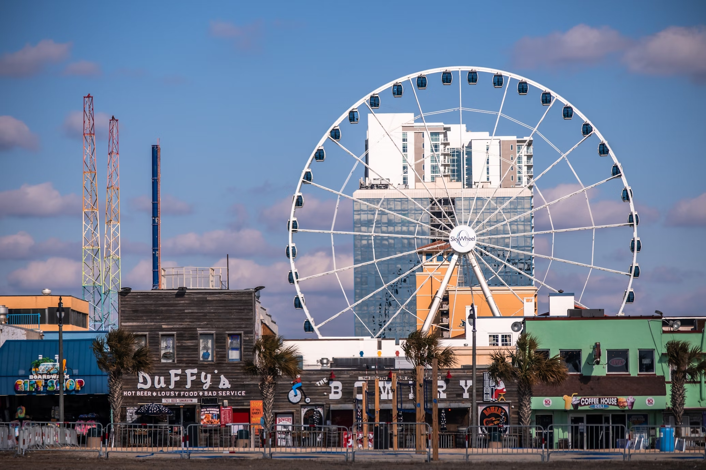
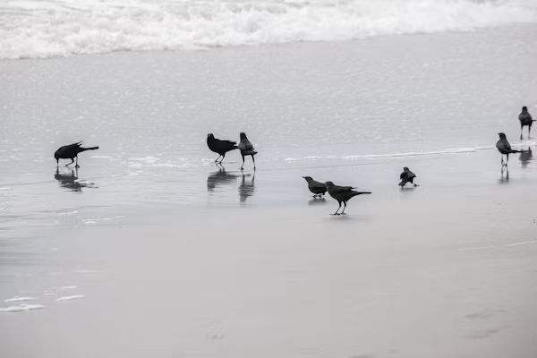
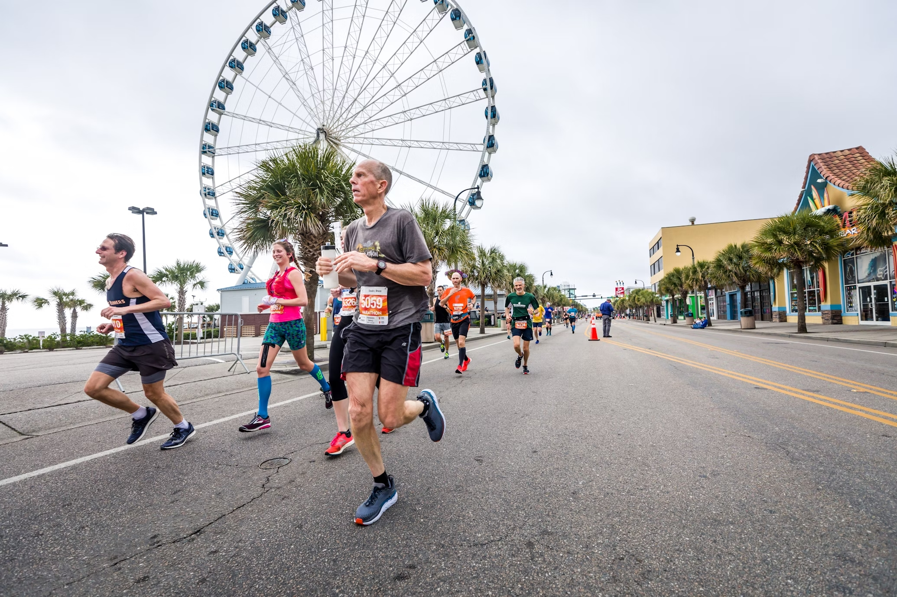

Discover Myrtle Beach, South Carolina
Myrtle Beach, located on the coast of South Carolina, is a vibrant and bustling destination known for its beautiful beaches, family-friendly attractions, and lively boardwalk. With over 60 miles of coastline, Myrtle Beach attracts millions of visitors each year who come to enjoy the sun, sand, and a variety of entertainment options. Whether you're looking to relax by the ocean or experience exciting activities, Myrtle Beach offers something for everyone.
The beach itself is famous for its wide, sandy shores and warm, inviting waters. It's a perfect spot for sunbathing, beach games, and swimming. Families and groups of friends often gather here to enjoy the stunning views and pleasant weather. The area has a tropical climate, with summer being the peak tourist season, but it remains a popular destination throughout the year.
One of the main highlights of Myrtle Beach is the Myrtle Beach Boardwalk and Promenade, a 1.2-mile stretch of oceanfront that features shops, restaurants, arcades, and attractions. The boardwalk offers stunning views of the Atlantic Ocean and is a popular place for a leisurely stroll, bike ride, or to watch street performers. The SkyWheel, a giant Ferris wheel on the boardwalk, gives visitors a bird’s-eye view of the entire Myrtle Beach area and the coastline.
In addition to the boardwalk, Myrtle Beach is home to numerous amusement parks, water parks, and mini-golf courses, making it a perfect destination for families with children. Family Kingdom Amusement Park and MagiQuest offer hours of entertainment with rides, games, and fun attractions. The city is also known for its live theater performances, shopping centers, and local seafood restaurants, where visitors can enjoy freshly caught fish and Southern delicacies.
Another unique feature of Myrtle Beach is its wide array of wildlife. The area is home to various species of birds, sea turtles, and marine life. Visitors can take eco-tours to spot dolphins in the wild or participate in turtle watch programs to help protect the endangered loggerhead turtles that nest along the coast. Local wildlife organizations are working to protect the natural environment, and tourists are encouraged to follow guidelines to avoid disturbing the animals and their habitats.
However, like many popular tourist destinations, Myrtle Beach faces challenges related to environmental sustainability. The beauty of the area can be overshadowed by the presence of trash left behind by visitors. It's important for everyone to take responsibility and pick up after themselves to keep Myrtle Beach pristine. Reducing the use of single-use plastics, supporting local cleanup efforts, and disposing of trash properly helps protect the beach and its wildlife.
Along with trash concerns, Myrtle Beach is also grappling with coastal erosion. Rising sea levels and heavy tourism are contributing factors that are affecting the beach's shoreline. The local community is actively working on replenishing sand and finding sustainable ways to combat these issues. If you’re visiting Myrtle Beach, it’s essential to respect the area and be mindful of your environmental impact. By taking part in keeping the beach clean, you help ensure that Myrtle Beach remains beautiful for future generations.
For those who love outdoor activities, Myrtle Beach offers more than just the beach. Hiking and biking trails are available in nearby parks such as Huntington Beach State Park and Myrtle Beach State Park, where visitors can explore nature and observe the local wildlife. These parks also provide designated areas for picnics, fishing, and birdwatching, giving a perfect balance of recreation and relaxation in a peaceful natural setting.
Another popular experience at Myrtle Beach is the annual Myrtle Beach Marathon, which attracts thousands of runners and spectators from across the country. Held every February, the marathon features a variety of races, including the marathon, half-marathon, 5K, and the marathon relay. It’s a fun and energetic event where participants enjoy running along scenic coastal views while also experiencing the vibrant atmosphere of Myrtle Beach. Whether you're a seasoned runner or someone looking to enjoy the race day festivities, the Myrtle Beach Marathon is an exciting event that brings the community and visitors together.
If you’re interested in a quieter experience, consider visiting Myrtle Beach in the off-season, when the crowds thin out, and you can enjoy more peaceful moments by the shore. Whether you visit during the peak summer months or the quiet winter season, Myrtle Beach offers a diverse experience that caters to everyone—from thrill-seekers to those seeking serenity.
As with all beautiful beaches, Myrtle Beach is a special place with cultural significance to its community. It's essential to respect the traditions and history of the area, especially when visiting indigenous and historic sites nearby. The local people value the land and water, and visitors should treat it with care, making sure to leave no trace during their stay.
In conclusion, Myrtle Beach is not just a destination; it’s an experience. With its family-friendly attractions, stunning beach views, diverse wildlife, and commitment to environmental care, it’s a place where memories are made. Whether you’re there to enjoy a day at the beach or explore all that the area has to offer, Myrtle Beach is a must-visit destination on the East Coast.